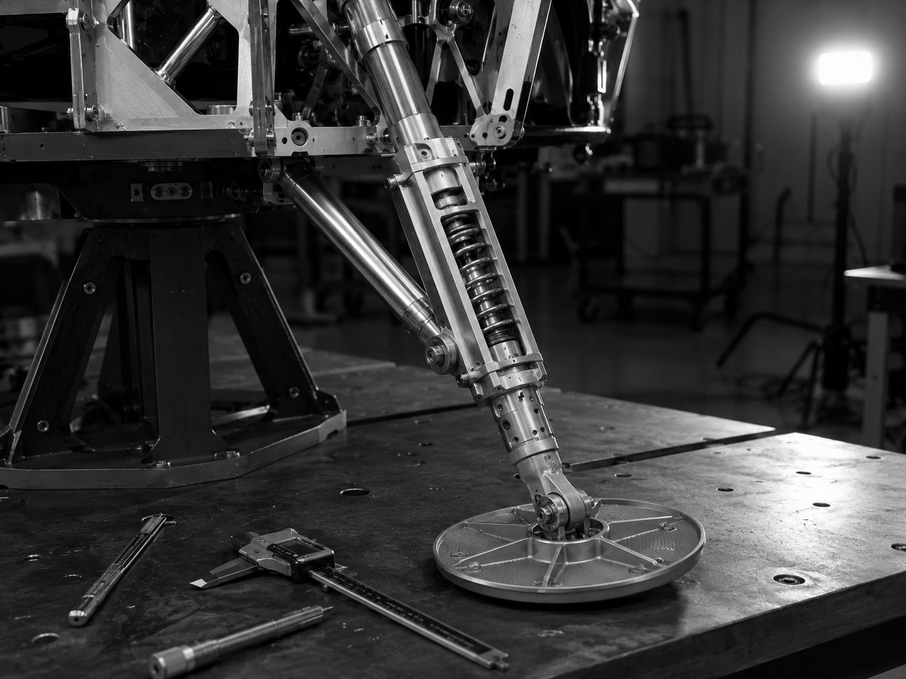
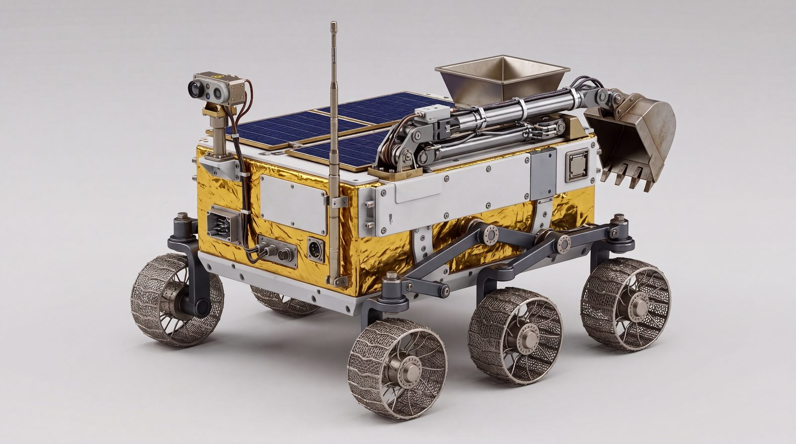
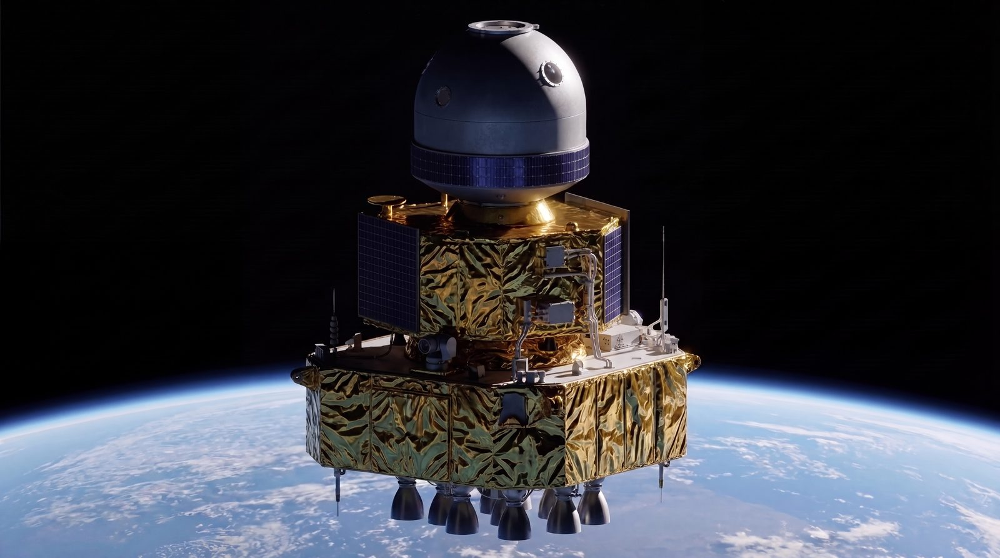
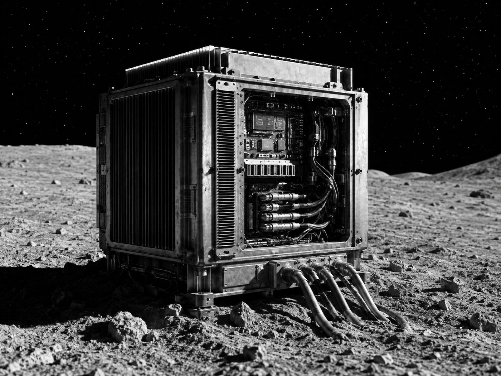
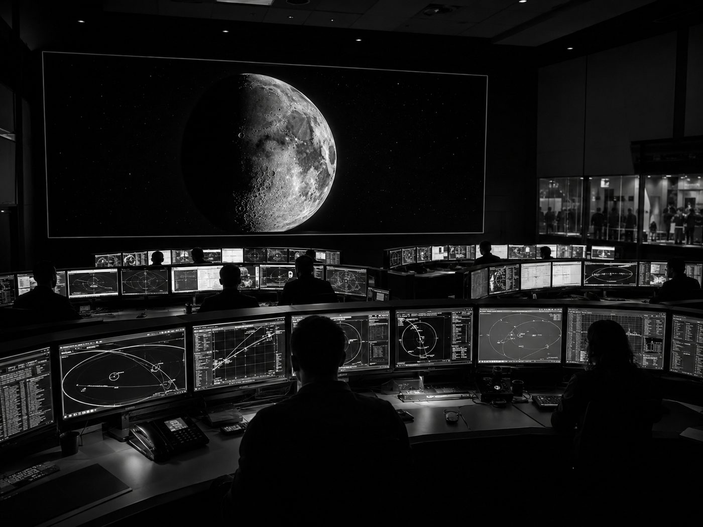

Power, mobility, resources, landers and orbiters.
The integrated lunar infrastructure stack Orbit Beyond engineers in India, the ₹200 crore programme under contract, and the work packages built in Odisha.
An integrated lunar infrastructure stack.
Five layers, each led by an ex-ISRO Chandrayaan engineer, with the mobility platform and Helium-3 extraction IP owned in India.
Lunar power · VSAT
6 to 10 kW vertical solar array with radioisotope heater units for lunar night survival.
RHUs and lunar batteries
Keep landers and surface assets alive. Only about two suppliers serve the surface today.
Long-range rover platform
Mobility for prospecting, mining logistics and site survey, with AI-based autonomous navigation.
Helium-3 extraction
Regolith processing and Helium-3 separation for quantum computing, medical and fusion demand.
Lander and orbiter engineering
Full-system design, payloads, integration and test: the OB1 lander scope and a relay orbiter.
Chandrayaan heritage
Ex-ISRO Chandrayaan leads head each subsystem, an Indian engineering cost base, and IP held in India.
A ₹200 crore flight programme is underway.
An engineering services, supply and development agreement with Orbit Beyond, Inc., effective 1 April 2026, delivered milestone by milestone.
| Project | Scope | Value |
|---|---|---|
| OB1 lunar lander | Full-system design, payloads, integration and test | ₹93.92 Cr |
| Communications relay orbiter | Relay and exploration orbiter, design through delivery | ₹53.08 Cr |
| AI data centre prototype | Radiation-tolerant lunar compute demonstrator | ₹53.00 Cr |
| Total | Approximately US$20.7M | ₹200 Cr |
- SRR system requirements review
- PDR preliminary design review
- CDR critical design review
- Structures qualification structure and environmental test
- Integration and acceptance, OB1 completion targeted in 2029
From contract engineering to product supplier.
Design reviews
- OB1 SRR and PDR
- Orbiter and AI prototype design reviews
- GENESIS rover and Helium-3 extraction prototypes
Qualification
- OB1 CDR and qualification structure
- Orbiter testing
- First external LOI, patent filings
Delivery
- OB1 integration and acceptance
- Orbiter delivery, AI prototype demo
- First product sale
Products
- Products for agencies and lander firms
- Rover and Helium-3 demonstrators
- Japan, EU and US markets
Five manufacturing work packages.
What the Global Space Systems Centre in Bhubaneswar will design, integrate and produce.

WORK PACKAGE 01Lander Leg Development
Deployable landing gear, shock-attenuation struts and crushable energy absorbers, machined on CTTC Bhubaneswar's ISRO-qualified base.
Read more
WORK PACKAGE 02Rover Development
Serial manufacture of lunar surface rovers: mobility, autonomy, wheels and drive assemblies. Flown on group missions and sold worldwide.
Read more
WORK PACKAGE 03Satellite Development
Three product lines on one common bus: lunar 5G relay, cislunar awareness and resource mapping. Export revenue from day one.
Read more
WORK PACKAGE 04Lunar AI Data Centre
Radiation-tolerant, thermally managed AI compute for the lunar surface, aligned with Odisha's semiconductor packaging ecosystem at Info Valley.
Read more
WORK PACKAGE 05Mission Control & Ground Segment
Bhubaneswar as primary mission control for all non-US missions, paired with NASA Marshall in Huntsville. Dual control, no single point of failure.
Read moreLander Leg Development
Deployable landing gear is where Odisha's capability is most directly relevant: legs, shock-attenuation struts and crushable energy absorbers, machined to ISRO standards.
- Legs, shock-attenuation and energy absorbers
- CTTC Bhubaneswar built around 70,000 precision parts for Chandrayaan-3
- Built on Odisha's aluminium ecosystem
- Drop-test rig in the Phase II facility
| Customer | OB-1 lander · group missions |
| Partner | CTTC Bhubaneswar |
| Phase | I to II |
Rover Development
Serial manufacture of lunar surface rovers: mobility systems, wheels, drive assemblies and autonomous navigation. Flown on ORBITBeyond missions and sold to third-party operators worldwide.
- Mobility, autonomy, wheels and drive assemblies
- Regolith test yard built in-state
- From 0 to 60 rover engineers by 2031
- Export sales to third-party operators
| Customer | Group missions · global operators |
| Facility | Rover test yard, Bhubaneswar |
| Phase | II to III |
Satellite Development
Three product lines on one common bus, generating recurring export revenue from day one.
- Lunar 5G communications relay, with Tejas Networks
- Cislunar awareness at L1/L2 for the US Space Force
- Lunar resource mapping, built in India's mineral State
- Common platform across all three lines
| Customer | USSF · group · commercial |
| Partner | Tejas Networks |
| Phase | II to III |
Lunar AI Data Centre
AI compute engineered for the lunar surface is an advanced-packaging problem: radiation-tolerant, thermally managed processing that runs inference and autonomy at the Moon, without routing data back to Earth.
- Radiation-tolerant, thermally-managed processing
- Aligned with the $225M 3D packaging facility at Info Valley, Khordha
- Operated as LunarEdge
- 14-day lunar night survival through the Tec-Masters partnership
| Customer | Commercial compute · science |
| Ecosystem | Odisha semiconductor packaging |
| Phase | III |
Mission Control & Ground Segment
Two linked centres, NASA Marshall and Bhubaneswar, with dual control so there is no single point of failure during descent.
- Bhubaneswar leads all non-US missions
- Dual control during descent
- Offered commercially to IN-SPACe operators
- Shared ground infrastructure for Indian and international missions
| Customer | Group · IN-SPACe operators |
| Pair | NASA Marshall, Huntsville |
| Phase | II |
Engineering now. Flying by 2029.
Design & Engineering Centre
- Lander and rover systems design
- Avionics, GNC and flight software
- Software-in-the-loop lab with Sim Dot Space
- Supplier qualification with CTTC
Full Integration & Mission Control
- Clean rooms and lander integration hall
- Thermal-vacuum and vibration test
- Rover test yard and drop-test rig
- Bhubaneswar Mission Control · ~500 engineers
Serial Manufacture & Operations
- Serial rover and satellite manufacture
- AI data-centre payload production
- Continuous mission operations from Odisha
- Export fulfilment: NASA, USSF, global
Have a payload, a product line or a partnership in mind?
Talk to the engineering team about lander, rover, satellite or compute programmes.